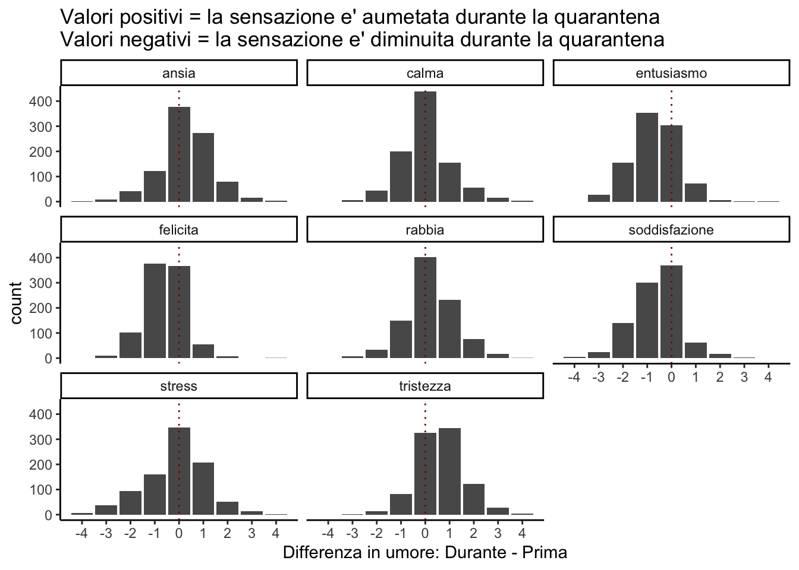
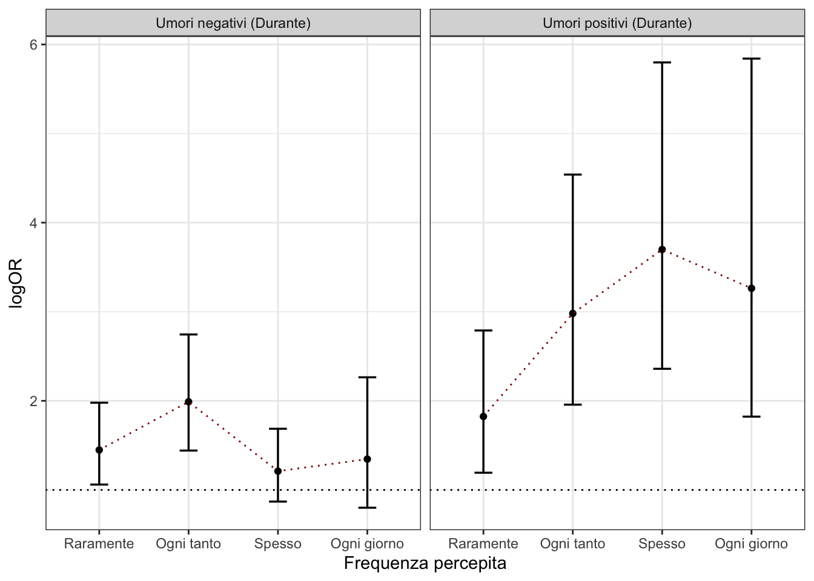
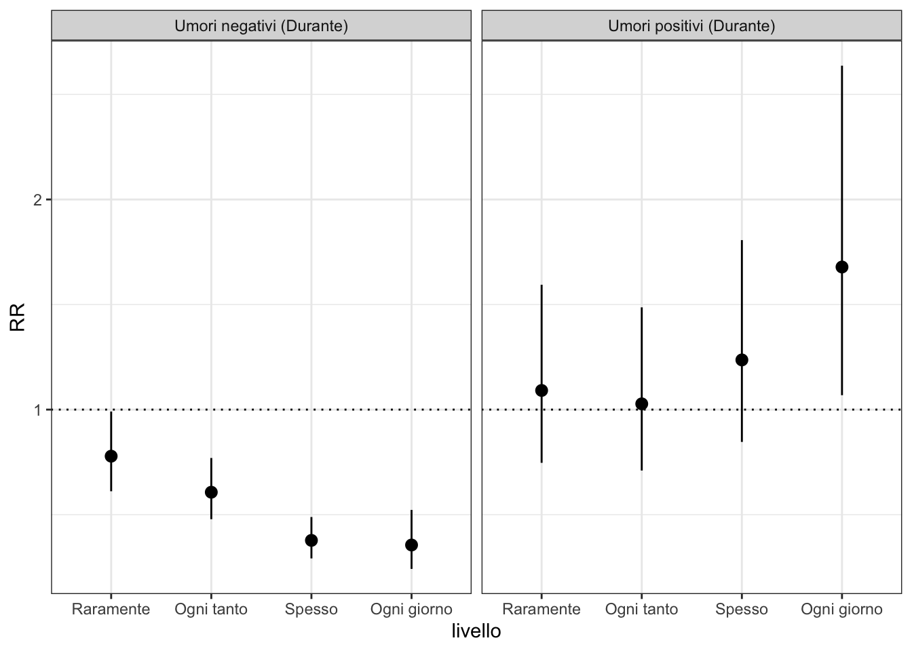
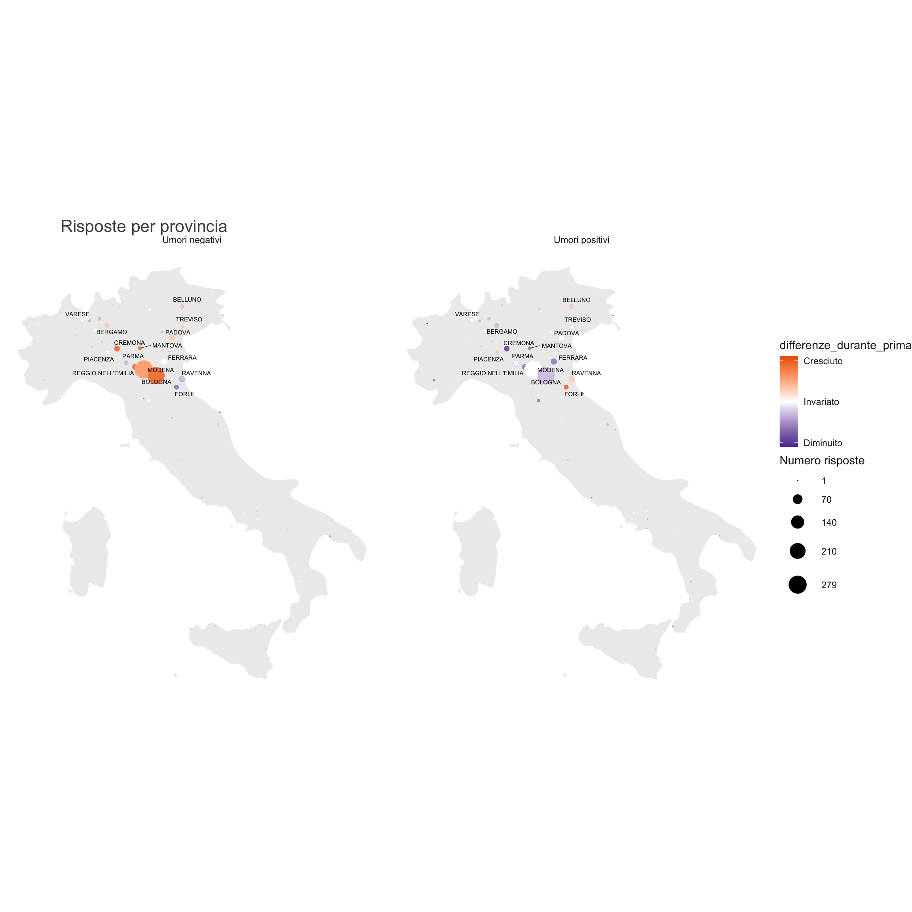

Last updated: 2020-07-05
Checks: 7 0
Knit directory: tesi-magistrale-lucia/
This reproducible R Markdown analysis was created with workflowr (version 1.6.2). The Checks tab describes the reproducibility checks that were applied when the results were created. The Past versions tab lists the development history.
Great! Since the R Markdown file has been committed to the Git repository, you know the exact version of the code that produced these results.
Great job! The global environment was empty. Objects defined in the global environment can affect the analysis in your R Markdown file in unknown ways. For reproduciblity it’s best to always run the code in an empty environment.
The command set.seed(20200530) was run prior to running the code in the R Markdown file. Setting a seed ensures that any results that rely on randomness, e.g. subsampling or permutations, are reproducible.
Great job! Recording the operating system, R version, and package versions is critical for reproducibility.
Nice! There were no cached chunks for this analysis, so you can be confident that you successfully produced the results during this run.
Great job! Using relative paths to the files within your workflowr project makes it easier to run your code on other machines.
Great! You are using Git for version control. Tracking code development and connecting the code version to the results is critical for reproducibility.
The results in this page were generated with repository version 2140b8c. See the Past versions tab to see a history of the changes made to the R Markdown and HTML files.
Note that you need to be careful to ensure that all relevant files for the analysis have been committed to Git prior to generating the results (you can use wflow_publish or wflow_git_commit). workflowr only checks the R Markdown file, but you know if there are other scripts or data files that it depends on. Below is the status of the Git repository when the results were generated:
Ignored files:
Ignored: .DS_Store
Ignored: .Rhistory
Ignored: .Rproj.user/
Ignored: data/dati_da_controllare/
Ignored: data/dati_da_controllare_cambiati/
Note that any generated files, e.g. HTML, png, CSS, etc., are not included in this status report because it is ok for generated content to have uncommitted changes.
These are the previous versions of the repository in which changes were made to the R Markdown (analysis/4.0-benessere-umorale.Rmd) and HTML (docs/4.0-benessere-umorale.html) files. If you’ve configured a remote Git repository (see ?wflow_git_remote), click on the hyperlinks in the table below to view the files as they were in that past version.
| File | Version | Author | Date | Message |
|---|---|---|---|---|
| Rmd | 2140b8c | Anna Quaglieri | 2020-07-05 | wflow_publish(“analysis/4.0-benessere-umorale.Rmd”) |
| html | 626bfff | Anna Quaglieri | 2020-07-02 | Build site. |
| Rmd | 7d69e93 | Anna Quaglieri | 2020-07-02 | wflow_publish(“analysis/4.0-benessere-umorale.Rmd”) |
| html | 555bdc1 | Anna Quaglieri | 2020-07-02 | Build site. |
| Rmd | 74f0284 | Anna Quaglieri | 2020-07-02 | wflow_publish(“analysis/4.0-benessere-umorale.Rmd”) |
| html | 1a87d91 | Anna Quaglieri | 2020-06-28 | Build site. |
| Rmd | de65101 | Anna Quaglieri | 2020-06-28 | wflow_publish(“analysis/4.0-benessere-umorale.Rmd”) |
| html | 7c85d2b | Anna Quaglieri | 2020-06-28 | Build site. |
| Rmd | 3a4c014 | Anna Quaglieri | 2020-06-28 | wflow_publish(“analysis/4.0-benessere-umorale.Rmd”) |
| html | 97ffb65 | Anna Quaglieri | 2020-06-28 | Build site. |
| Rmd | a12c679 | Anna Quaglieri | 2020-06-28 | wflow_publish(c(“analysis/index.Rmd”, “analysis/4.0-benessere-umorale.Rmd”, |
| html | 223523a | Anna Quaglieri | 2020-06-28 | Build site. |
| Rmd | fe616a7 | Anna Quaglieri | 2020-06-28 | wflow_publish(“analysis/4.0-benessere-umorale.Rmd”) |
Inizialmente ho ricodificato le risposte sullo stato umorale in numeri per vedere se c’e’ stata una diminuzione o aumento generale. La ricodifica e’ stata fatta in questo modo:
Dato che stiamo guardando alla differenza tra prima e dopo, si avranno valori negativi se prima della quarantena i partecipanti hanno messo valori piu’ alti rispetto al durante per certi aspetti umorali e viceversa, valori positivi se durante e’ maggiore di prima.

| Version | Author | Date |
|---|---|---|
| 223523a | Anna Quaglieri | 2020-06-28 |
In particolare dall’attivita’ fisica. Nei grafici sotto, invece che mostrare i numeri totali delle persone mostro la proporzione dei livelli dei gruppi (diversi colori) nelle varie barre.
| Version | Author | Date |
|---|---|---|
| 223523a | Anna Quaglieri | 2020-06-28 |
| Version | Author | Date |
|---|---|---|
| 223523a | Anna Quaglieri | 2020-06-28 |
| Version | Author | Date |
|---|---|---|
| 223523a | Anna Quaglieri | 2020-06-28 |
Relevel di tutti gli umori mettendo la classe Mai come baseline
Fai un modello per ogni umore e attivita’ praticata durante aggiustando per sesso ed eta
# weights: 30 (20 variable)
initial value 1479.073442
iter 10 value 1340.528418
iter 20 value 1316.404383
final value 1316.360635
converged
# weights: 30 (20 variable)
initial value 1479.073442
iter 10 value 1274.688505
iter 20 value 1234.706334
final value 1233.926604
converged
# weights: 30 (20 variable)
initial value 1479.073442
iter 10 value 1370.058460
iter 20 value 1361.278711
final value 1361.169283
converged
# weights: 30 (20 variable)
initial value 1479.073442
iter 10 value 1296.603628
iter 20 value 1272.288523
final value 1272.148353
converged
# weights: 30 (20 variable)
initial value 1479.073442
iter 10 value 1156.080462
iter 20 value 1125.111675
final value 1124.851930
converged
# weights: 30 (20 variable)
initial value 1479.073442
iter 10 value 1225.150680
iter 20 value 1210.128729
final value 1209.671112
converged
# weights: 30 (20 variable)
initial value 1479.073442
iter 10 value 1273.239920
iter 20 value 1253.872494
final value 1253.405550
converged
# weights: 30 (20 variable)
initial value 1479.073442
iter 10 value 1240.240365
iter 20 value 1225.682394
final value 1225.521143
converged
| Version | Author | Date |
|---|---|---|
| 555bdc1 | Anna Quaglieri | 2020-07-02 |
# weights: 30 (20 variable)
initial value 5916.293766
iter 10 value 5422.152505
iter 20 value 5297.328868
iter 30 value 5263.295107
final value 5263.294868
converged
# weights: 30 (20 variable)
initial value 5916.293766
iter 10 value 5222.978239
iter 20 value 4990.462660
final value 4955.142067
converged
| Version | Author | Date |
|---|---|---|
| 555bdc1 | Anna Quaglieri | 2020-07-02 |
I LogOddsRatio per ogni livello sono calcolati con rispetto a chi pratica attivita’ sportiva durante la quarantena o chi non pratica.
# weights: 30 (20 variable)
initial value 798.281205
iter 10 value 687.409139
iter 20 value 684.193090
iter 30 value 683.915337
final value 683.913872
converged
# weights: 30 (20 variable)
initial value 798.281205
iter 10 value 671.918069
iter 20 value 663.353486
final value 663.241988
converged
| Version | Author | Date |
|---|---|---|
| 555bdc1 | Anna Quaglieri | 2020-07-02 |
# weights: 30 (20 variable)
initial value 5118.012562
iter 10 value 4670.554364
iter 20 value 4569.878254
final value 4554.010425
converged
# weights: 30 (20 variable)
initial value 5118.012562
iter 10 value 4395.067564
iter 20 value 4269.701656
final value 4257.028652
converged
| Version | Author | Date |
|---|---|---|
| 555bdc1 | Anna Quaglieri | 2020-07-02 |
# weights: 25 (16 variable)
initial value 5118.012562
iter 10 value 4573.464244
iter 20 value 4564.529655
final value 4564.527212
converged
# weights: 25 (16 variable)
initial value 5118.012562
iter 10 value 4291.140478
iter 20 value 4280.208922
final value 4280.206017
converged# weights: 25 (16 variable)
initial value 5118.012562
iter 10 value 4573.464244
iter 20 value 4564.529655
final value 4564.527212
converged
# weights: 25 (16 variable)
initial value 5118.012562
iter 10 value 4291.140478
iter 20 value 4280.208922
final value 4280.206017
converged
Mostra la mappa dell’Italia con le varie sensazioni durante e la differenza tra prima e dopo

| Version | Author | Date |
|---|---|---|
| 555bdc1 | Anna Quaglieri | 2020-07-02 |
R version 4.0.0 (2020-04-24)
Platform: x86_64-apple-darwin17.0 (64-bit)
Running under: macOS Catalina 10.15.4
Matrix products: default
BLAS: /Library/Frameworks/R.framework/Versions/4.0/Resources/lib/libRblas.dylib
LAPACK: /Library/Frameworks/R.framework/Versions/4.0/Resources/lib/libRlapack.dylib
locale:
[1] en_AU.UTF-8/en_AU.UTF-8/en_AU.UTF-8/C/en_AU.UTF-8/en_AU.UTF-8
attached base packages:
[1] stats graphics grDevices utils datasets methods base
other attached packages:
[1] nnet_7.3-14 ggrepel_0.8.2 viridis_0.5.1 viridisLite_0.3.0
[5] mapproj_1.2.7 maps_3.3.0 ggmap_3.0.0 ggExtra_0.9
[9] readxl_1.3.1 epitools_0.5-10.1 gridExtra_2.3 modelsummary_0.3.0
[13] ggalluvial_0.11.3 here_0.1 googledrive_1.0.1 forcats_0.5.0
[17] stringr_1.4.0 dplyr_1.0.0 purrr_0.3.4 tidyr_1.1.0
[21] tibble_3.0.1 ggplot2_3.3.1 tidyverse_1.3.0 readr_1.3.1
[25] workflowr_1.6.2
loaded via a namespace (and not attached):
[1] nlme_3.1-147 bitops_1.0-6 fs_1.4.1
[4] lubridate_1.7.8 httr_1.4.1 rprojroot_1.3-2
[7] tools_4.0.0 backports_1.1.7 R6_2.4.1
[10] DBI_1.1.0 colorspace_1.4-1 withr_2.2.0
[13] sp_1.4-2 tidyselect_1.1.0 compiler_4.0.0
[16] git2r_0.27.1 cli_2.0.2 rvest_0.3.5
[19] xml2_1.3.2 labeling_0.3 scales_1.1.1
[22] digest_0.6.25 rmarkdown_2.1 jpeg_0.1-8.1
[25] pkgconfig_2.0.3 htmltools_0.5.0 dbplyr_1.4.4
[28] fastmap_1.0.1 rlang_0.4.6 rstudioapi_0.11
[31] shiny_1.5.0 farver_2.0.3 generics_0.0.2
[34] jsonlite_1.6.1 magrittr_1.5 Rcpp_1.0.4.6
[37] munsell_0.5.0 fansi_0.4.1 lifecycle_0.2.0
[40] stringi_1.4.6 whisker_0.4 yaml_2.2.1
[43] plyr_1.8.6 grid_4.0.0 blob_1.2.1
[46] promises_1.1.0 crayon_1.3.4 miniUI_0.1.1.1
[49] lattice_0.20-41 haven_2.3.0 hms_0.5.3
[52] knitr_1.28 pillar_1.4.4 rjson_0.2.20
[55] reprex_0.3.0 glue_1.4.1 evaluate_0.14
[58] modelr_0.1.8 png_0.1-7 vctrs_0.3.0
[61] httpuv_1.5.3.1 RgoogleMaps_1.4.5.3 cellranger_1.1.0
[64] gtable_0.3.0 assertthat_0.2.1 xfun_0.14
[67] mime_0.9 xtable_1.8-4 broom_0.5.6
[70] later_1.0.0 ellipsis_0.3.1